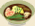

Bonsai Japanese Restaurant & Sushi Bar
Bonsai is located in the Shoppes at New Tampa, along Bruce B Downs Blvd in Wesley Chapel. We serve a variety of market fresh sushi as well as traditional Japanese cuisine. View menu.
Address, Phone & Hours
1652 Bruce B Downs Blvd, Wesley Chapel, FL 33544
(813) 994-7333
Lunch: Mon-Fri 11:30-2:30
Dinner: Mon-Thurs 5:00-10:00, Fri 4:30-10:30, Sat 12-10:30, Sun 4:30-9:30
Bonsai Menu Options
- Appetizers
- Special Sushi Rolls
 Regular Rolls & Platters
Regular Rolls & Platters- Nigiri Sushi & Sashimi
- Japanese Dishes
- Beverages